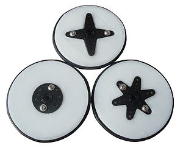
(click para ampliar)
Contenido
[ocultar]Introducción

|
Este diseño es una evolución de las Ruedas G3 del Skybot |
Las Ruedas G3 del Skybot se han parametrizado, y se han generalizado para ser usadas en otros otros robots, como por ejemplo el Mini-Skybot y sus derivados. Por eso han publicado en una página diferente.
Información
| Dimensiones | Dependen de los parámetros introducidos |
| Material | ABS (Acrilonitrilo Butadieno Estireno) Es el mismo plástico de las piezas de Lego |
| Tiempo de impresión | Depende del tamaño de la rueda. La del Skybot tarda 25 minutos |
Descarga
Version 4.0
|
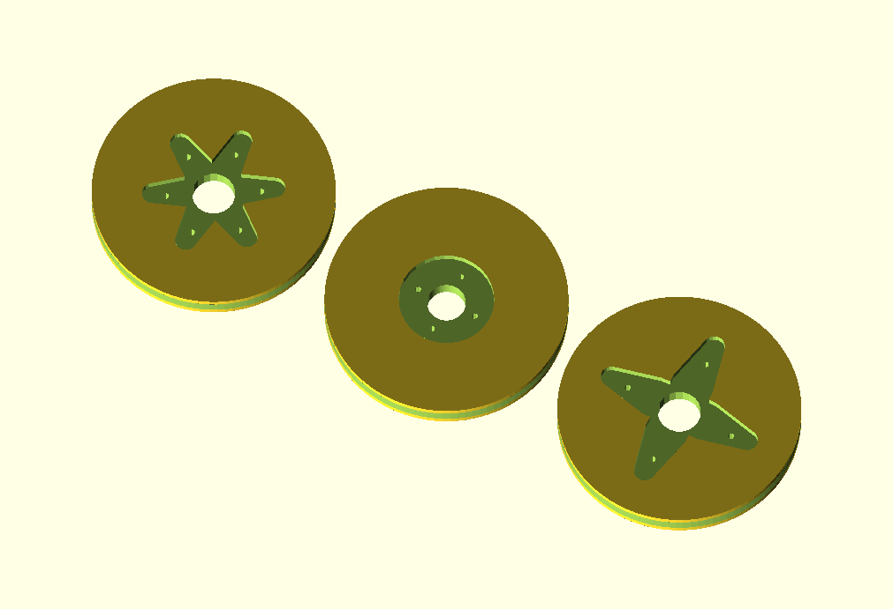 |
Servo-wheel.scad | Ruedas 4.0. Fuentes para Openscad |
|
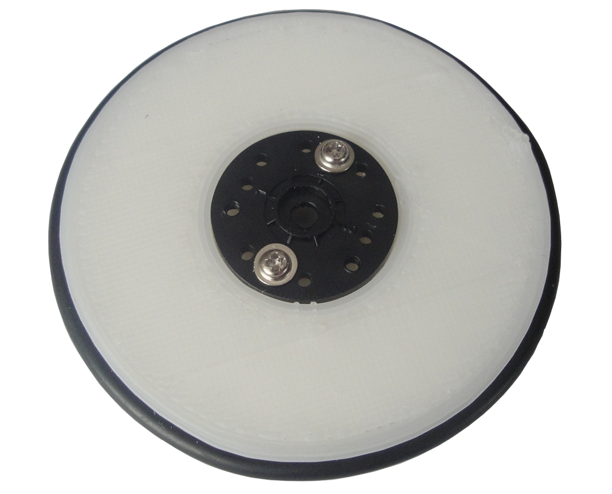 |
Servo-wheel-rounded-horn.stl | STL. Rueda para cabeza de servo circular |
|
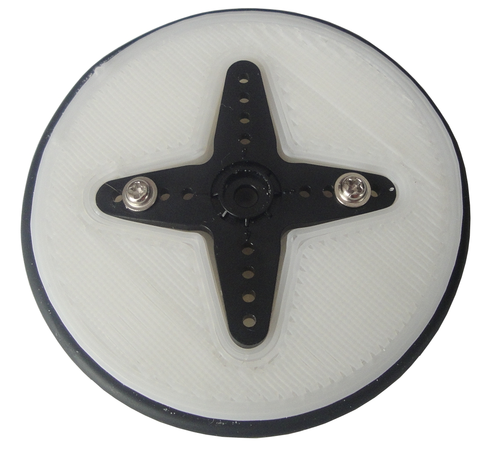 |
Servo-wheel-4-arm-horn.stl | STL. Rueda para cabeza de servo de 4 brazos |
|
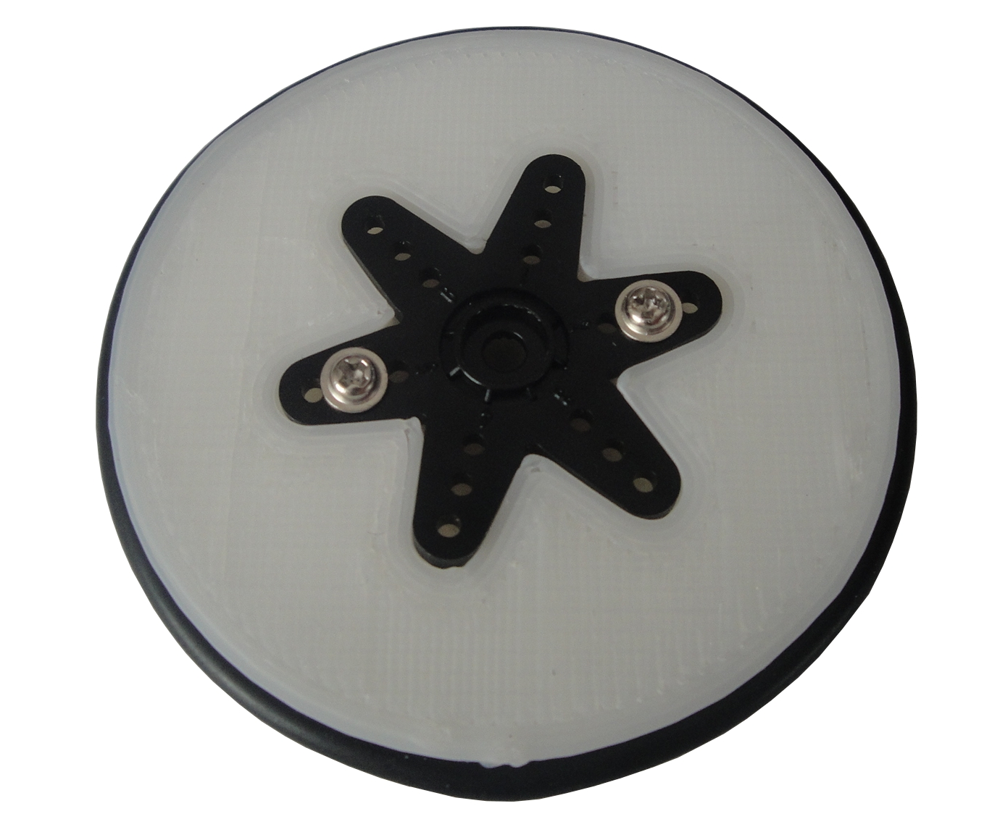 |
Servo-wheel-6-arm-horn.stl | STL. Rueda para cabeza de servo de 6 brazos |


Versión 3.0
|
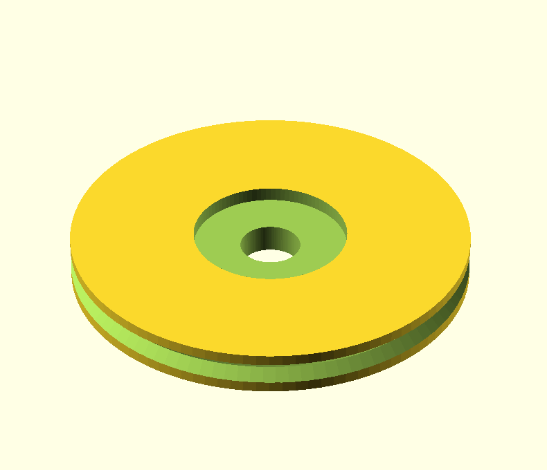 |
Servo-wheel.scad | Rueda básica. Fuentes para Openscad |

|
servo_wheel-skybot.stl | STL de la rueda básica para el Skybot/Miniskybot 1.0 |
|
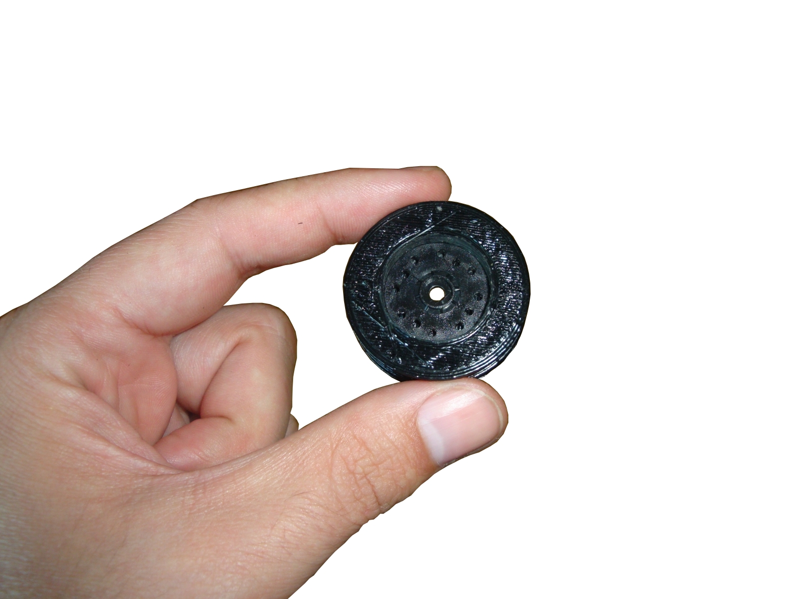 |
servo_wheel_30mm.stl | STL de una rueda básica de ejemplo, de 35mm de diámetro y 10mm de grosor |
| oshw-miniskybot-wheel.scad | Variante de la rueda con el logo de open source hardware (OSHW). Fuentes para Openscad | |
| oshw-miniskybot-wheel.stl | STL de la rueda con el logo oswh |


- Diseñada con OpenScad
- Rueda parametrizada
- Gcode generado con: Replicatorg 0024 (SF35-cupcake-HBP)
Historia
- 25/Marzo/2012: ([ Blog]) Nueva versión 4.0. Mejoras:
- Hay 3 versiones, una para cada tipo de cabeza de servo: circular, de 4 brazos y de 6 brazos
- Añadidos taladros pequeños para atornillar más fácilmente las cabezas del servo
- Ruedas migradas a un repositorio del github
- 27/Junio/2011: (blog) Nueva variante de la rueda del Miniskybot, con el logotipo del OSHW. Hecha por Sergio Vilches.
- 30/Enero/2011: Creada la versión 3.0 a partir de la 2.0 de las ruedas del skybot. Se hizo parametrizable.
Fotos
| Álbum de fotos completo |
|---|
| 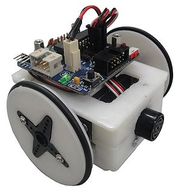 El Miniskybot 2 con las nuevas ruedas (click para ampliar) |

| 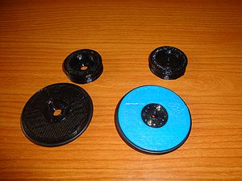 Ruedas de diferentes tamaños (click para ampliar) |
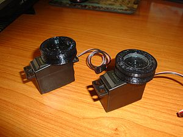 Dos ruedas de 35mm de diámetro conectadas a los servos futaba 3003 (click para ampliar) |


| 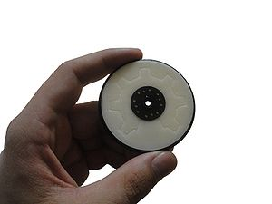 OSHW-logo miniskybot wheel (click para ampliar) |
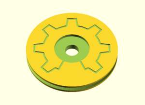 OSHW-logo miniskybot wheel in Openscad (click para ampliar) |
Repositorio
Version 4
- La versión 4 está en el github del Miniskybot 2:
Versiones anteriores
- Las versiones anteriores están en este repo SVN:
Autores
- Juan González: Ruedas versión 3 y 4
- Sergio vilches: Variante de la rueda 3.0 con el logo de open source hardware (OSHW)
Licencia
| |
Enlaces
- índice de Objetos 3-D
- Robot Miniskybot
- Robot skybot
- Ruedas para servo. Diseño en thingiverse
Noticias
- 25/Marzo/2011: Añadida versión 4.0
- 06/Junio/2011: Añadida la variante de la rueda con el logo de OSHW (by Sergio Vilches)
- 04/Junio/2011: Comenzada esta página